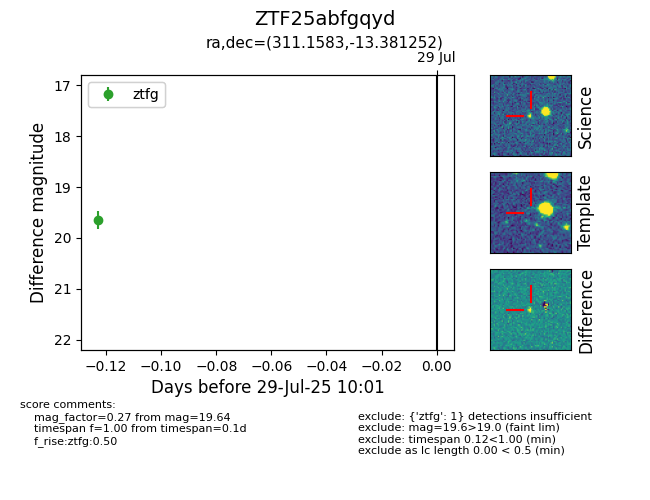

Target ZTF25abfgqyd at 2025-07-29 10:01, see:
FINK: fink-portal.org/ZTF25abfgqyd
Lasair: lasair-ztf.lsst.ac.uk/objects/ZTF25abfgqyd
ALeRCE: alerce.online/object/ZTF25abfgqyd
alt names
ZTF25abfgqyd (ztf,fink)
coordinates:
equatorial (ra, dec) = (311.1583,-13.38125)
galactic (l, b) = (33.2216,-31.06373)
photometry
last ztfg=19.64
1 ztfg detections
